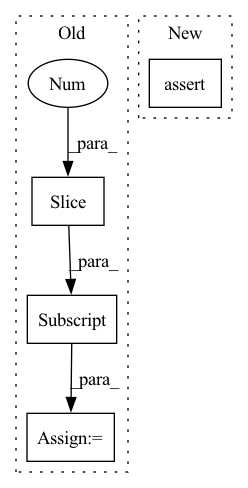

Pattern ID :3255
Before Change
shape_ret, dimlist, complist = binary_broadcast(x.shape, y.shape, True)
assert tuple(shape_ret) == tuple(ret.shape)
prod_list = np.array(dimlist, dtype=i32)[-1::-1].cumprod(dtype=i32)[-1::-1] // take cumprod from back to front
prg, is_float4 = get_binop_prg(code, tuple(complist))
kernel_size = ((roundup(prod_list[0])//4) if is_float4 else prod_list[0]) if len(dimlist) > 0 else 1
prg.binop(cl_queue, [kernel_size], None, x.cl, y.cl, ret.cl, *dimlist, *(prod_list[1:]))After Change
elif op == BinaryOps.POW: code = "pow(a,b)"
elif op == BinaryOps.CMPEQ: code = "(float4)(1.0f*(a.x==b.x), 1.0f*(a.y==b.y), 1.0f*(a.z==b.z), 1.0f*(a.w==b.w))"
else: raise Exception(f"{op} isn"t supported")
assert x.shape == ret.shape and y.shape == ret.shape
binop = clbuild("binop",
__kernel void binop(__global const float4 *a_g, __global const float4 *b_g, __global float4 *res_g) {
int gid = get_global_id(0);In pattern: SUPERPATTERN
Frequency: 8
Non-data size: 4
Instances Fragment ID: 12434108
Project Name: geohot/tinygrad
Commit Name: dcbca4fdf15a249e0864289a3715fcaee9be005f
Time: 2022-06-12
Author: 72895+geohot@users.noreply.github.com
File Name: tinygrad/llops/ops_gpu.py
M Class Name: AnonimousClass
N Class Name: AnonimousClass
M Method Name: binary_op(4)
N Method Name: binary_op(4)
M Parent Class:
N Parent Class:
M File Name: tinygrad/llops/ops_gpu.py
N File Name: tinygrad/llops/ops_gpu.py
M Start Line: 95
M End Line: 104
N Start Line: 75
N End Line: 86
Before Change
// per_channel_quantization
assert layer_to_config_dict[layer][ConfigDictKeys.PER_CHANNEL_QUANTIZATION]
layers = model.layers[1:]
conv1, add1, dense1 = layers[0], layers[10], layers[14]
assert (conv1, "output") in layer_to_config_dict[conv1][ConfigDictKeys.IS_OUTPUT_QUANTIZED]["affected_quantizers"]
assert (add1, "output") in layer_to_config_dict[add1][ConfigDictKeys.IS_OUTPUT_QUANTIZED]["affected_quantizers"]After Change
assert not q.is_symmetric
for q in layer_to_quantizers_dict[layer][OUTPUT_QUANTIZERS]:
assert q.is_enabled()
assert not q.is_symmetric
for q in layer_to_quantizers_dict[layer][PARAM_QUANTIZERS]: Fragment ID: 12434089
Project Name: quic/aimet
Commit Name: c3e5fc8691e539e77bdabcdce29c58c5105406d2
Time: 2022-04-03
Author: quic_geunlee@quicinc.com
File Name: TrainingExtensions/tensorflow/test/python/test_quantsim_config_keras.py
M Class Name: TestQuantSimConfig
N Class Name: TestQuantSimConfig
M Method Name: test_parse_config_file_defaults(1)
N Method Name: test_parse_config_file_defaults(1)
M Parent Class:
N Parent Class:
M File Name: TrainingExtensions/tensorflow/test/python/test_quantsim_config_keras.py
N File Name: TrainingExtensions/tensorflow/test/python/test_quantsim_config_keras.py
M Start Line: 182
M End Line: 207
N Start Line: 186
N End Line: 206
Before Change
// e.g. 2speakers/wav8k/min/tr/mix/019o031a_0.27588_01vo030q_-0.27588.wav
// id of speaker 1 is 019 utterance id is o031a
// id of speaker 2 is 01v utterance id is 01vo030q
s1_id = Path(s1_wav).stem.split("_")[0][:3]
if s1_id not in spk_hashtable.keys():
spk_hashtable[s1_id] = [s1_wav]
else:
spk_hashtable[s1_id].append(s1_wav)After Change
spk_id = Path(utt).stem[:3]
torchaudio.info(utt)
assert torchaudio.info(utt).sample_rate == 8000
// e.g. 2speakers/wav8k/min/tr/mix/019o031a_0.27588_01vo030q_-0.27588.wav
// id of speaker 1 is 019 utterance id is o031a Fragment ID: 12434107
Project Name: speechbrain/speechbrain
Commit Name: e716f99a82f8dc90125ddfe0aae214209fa8cc2f
Time: 2021-01-18
Author: cornellsamuele@gmail.com
File Name: recipes/WSJ2Mix/separation/dynamic_mixing.py
M Class Name: AnonimousClass
N Class Name: AnonimousClass
M Method Name: build_spk_hashtable(1)
N Method Name: build_spk_hashtable(1)
M Parent Class:
N Parent Class:
M File Name: recipes/WSJ2Mix/separation/dynamic_mixing.py
N File Name: recipes/WSJ2Mix/separation/dynamic_mixing.py
M Start Line: 13
M End Line: 27
N Start Line: 12
N End Line: 21
Before Change
[15, 20, 35, 30]
])
c_img, _ = cropper(input_t, dict(boxes=boxes))
new_h, new_w = c_img.shape[:2]
assert new_h >= 3
assert new_w >= 3
After Change
assert 0.75 <= img.shape[0] / img.shape[1] <= 1.33
// Check the target
assert np.all(target["boxes"] >= 0)
assert np.all(target["boxes"][:, [0, 2]] <= img.shape[1]) and np.all(target["boxes"][:, [1, 3]] <= img.shape[0])
def test_gaussian_blur(): Fragment ID: 12434090
Project Name: mindee/doctr
Commit Name: f5b6375507ace7ec9f5666cde4e3fb2b938373ed
Time: 2021-12-29
Author: 76527547+fg-mindee@users.noreply.github.com
File Name: tests/tensorflow/test_transforms_tf.py
M Class Name: AnonimousClass
N Class Name: AnonimousClass
M Method Name: test_random_crop(0)
N Method Name: test_random_crop(0)
M Parent Class:
N Parent Class:
M File Name: tests/tensorflow/test_transforms_tf.py
N File Name: tests/tensorflow/test_transforms_tf.py
M Start Line: 305
M End Line: 311
N Start Line: 305
N End Line: 317
Before Change
// calculate targets
mixup = targets.shape[2] > 5
if mixup:
label_cut = targets[..., :5]
else:
label_cut = targets
nlabel = (label_cut.sum(dim=2) > 0).sum(dim=1) // number of objects
After Change
if self.reid_dim > 0:
reid_preds = outputs[:, :, self.num_classes + 5:] // [batch, h*w, 128]
assert targets.shape[2] == 6 if self.reid_dim > 0 else 5
nlabel = (targets.sum(dim=2) > 0).sum(dim=1) // number of objects
total_num_anchors = outputs.shape[1] Fragment ID: 12434074
Project Name: zhangming8/yolox-pytorch
Commit Name: e162fc0465b1f5d8b3211cdc81fd8eabb6dd55c7
Time: 2021-07-26
Author: zhangming8@github.com
File Name: models/losses/yolox_loss.py
M Class Name: YOLOXLoss
N Class Name: YOLOXLoss
M Method Name: get_losses(9)
N Method Name: get_losses(9)
M Parent Class: nn.Module
N Parent Class: nn.Module
M File Name: models/losses/yolox_loss.py
N File Name: models/losses/yolox_loss.py
M Start Line: 94
M End Line: 206
N Start Line: 105
N End Line: 224
Before Change
[15, 20, 35, 30]
])
c_img, _ = cropper(input_t, dict(boxes=boxes))
new_h, new_w = c_img.shape[:2]
assert new_h >= 3
assert new_w >= 3
After Change
])
img, target = cropper(input_t, dict(boxes=boxes))
// Check the scale
assert img.shape[-1] * img.shape[-2] >= 0.5 * input_t.shape[-1] * input_t.shape[-2]
// Check aspect ratio
assert 0.75 <= img.shape[-2] / img.shape[-1] <= 1.33
// Check the target Fragment ID: 12434132
Project Name: mindee/doctr
Commit Name: f5b6375507ace7ec9f5666cde4e3fb2b938373ed
Time: 2021-12-29
Author: 76527547+fg-mindee@users.noreply.github.com
File Name: tests/pytorch/test_transforms_pt.py
M Class Name: AnonimousClass
N Class Name: AnonimousClass
M Method Name: test_random_crop(0)
N Method Name: test_random_crop(0)
M Parent Class:
N Parent Class:
M File Name: tests/pytorch/test_transforms_pt.py
N File Name: tests/pytorch/test_transforms_pt.py
M Start Line: 158
M End Line: 164
N Start Line: 158
N End Line: 170
Before Change
con_outputs, con_context_outputs = self.context_module(con_input)
// forward decoder(s)
skips = enc_dec_skips[::-1] // reverse tuple of skip connections
outputs = []
for decoder in self.decoders.values():
outputs.append(After Change
con_input = enc_outputs["rgb"]
else:
// use the output of the decoder with the same name as the input
assert len(enc_inputs) == 1 // only one input modality
con_input = enc_outputs[list(enc_inputs.keys())[0]]
con_outputs, con_context_outputs = self.context_module(con_input)
Fragment ID: 12434102
Project Name: tui-nicr/emsanet
Commit Name: c27ed2c1ec4b9dc6eb862cee7f582e2396f8d5a5
Time: 2023-03-29
Author: daniel.seichter@tu-ilmenau.de
File Name: emsanet/model.py
M Class Name: EMSANet
N Class Name: EMSANet
M Method Name: forward(3)
N Method Name: forward(3)
M Parent Class: torch.nn.Module
N Parent Class: torch.nn.Module
M File Name: emsanet/model.py
N File Name: emsanet/model.py
M Start Line: 170
M End Line: 191
N Start Line: 194
N End Line: 224
Before Change
if theta.ndim != 3 or theta.shape[-2] != 3 or theta.shape[-1] != 4:
raise ValueError("Expected a batch of 3D affine matrices of shape Nx3x4 "
"for size {}. Got {}.".format(size, theta.shape))
spatial_size = size[-3:] // spatial dimension sizes
else:
raise ValueError("affine_grid only supports 4D and 5D sizes, "
"for 2D and 3D affine transforms, respectively. "After Change
assert theta.ndim == 3 and theta.shape[-2] == 2 and theta.shape[-1] == 3
return affine_grid_generator_4D(theta, size[0], size[1], size[2], size[3], align_corners)
elif len(size)==5:
assert theta.ndim == 3 and theta.shape[-2] == 3 and theta.shape[-1] == 4
return affine_grid_generator_5D(theta, size[0], size[1], size[2], size[3], size[4], align_corners)
Fragment ID: 12434080
Project Name: jittor/jittor
Commit Name: 151f0b3dec9cd6e3bf55b5d543628cb5c9b59782
Time: 2020-09-23
Author: 1905692338@qq.com
File Name: python/jittor/nn.py
M Class Name: AnonimousClass
N Class Name: AnonimousClass
M Method Name: affine_grid(3)
N Method Name: affine_grid(3)
M Parent Class:
N Parent Class:
M File Name: python/jittor/nn.py
N File Name: python/jittor/nn.py
M Start Line: 874
M End Line: 897
N Start Line: 853
N End Line: 861